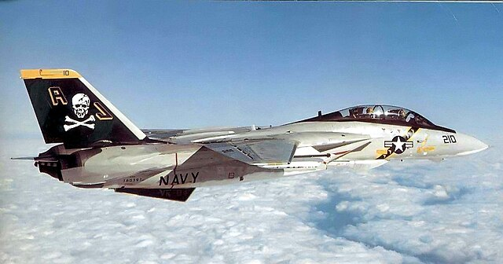

F-14 Tomcat

The F-14 tomcat was made for one thing and one thing only to shoot down state of the art supersonic bombers. The F-14 tomcat is air superiority aircraft. The f-14 has a max speed of mach 2.3. The F-14 tomcat is responsible for 159 air to air kills. The F-14 uses aim 54 air to air missiles which are some of the biggest air to air missiles. The F-14 is iconic for its wings be able to fold in and out and of course its role in the movie top gun. The F-14 Tomcat is no longer in service
Back